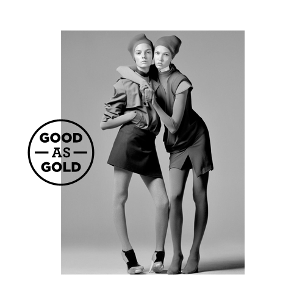
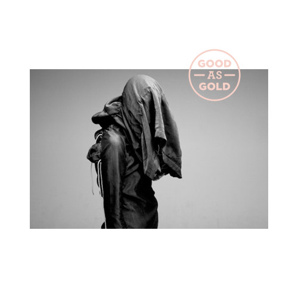
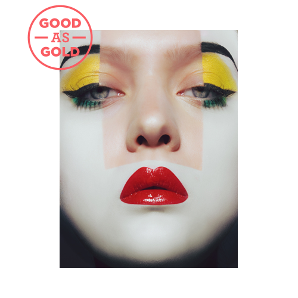

This logo is to be used whenever possible. It should be transparent and a single colour. Don't skew it. It doesn't need to be massive, but shouldn't be too small either.

OK. Positioning the logo along an edge breaks up the structure of the layout.

OK. Only overlapping one edge. With greyscale images a colour can lift the logo off the image and tie together the composition.

NOT OK. Overlapping the logo with two edges makes it look too much like PILOT. Colour chosen doesn't contrast with the tones in the image enough.